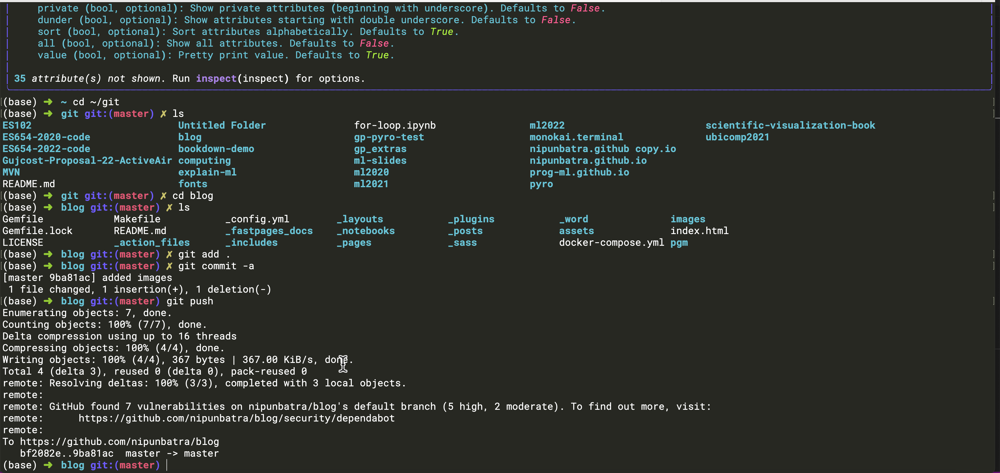
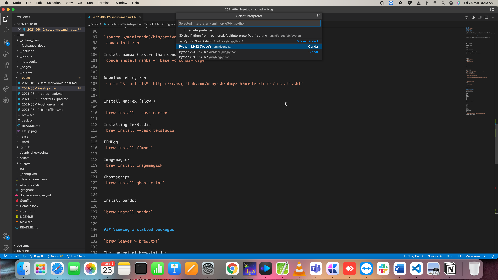

Setting up a new Mac
Here is a screenshot.

This guide covers how I set up a new Mac for development. I use Homebrew as my package manager - it makes it easy to install and maintain all packages.
1. Core System Setup
Install Xcode Command Line Tools
xcode-select --installInstall Homebrew
/bin/bash -c "$(curl -fsSL https://raw.githubusercontent.com/Homebrew/install/HEAD/install.sh)"Essential CLI Tools
# Version control
brew install git
# Git credential manager
brew tap microsoft/git
brew install --cask git-credential-manager-core
# File operations
brew install wget
# Fuzzy finder
brew install fzf
# Better find alternative
brew install fd
# Better grep alternative
brew install ripgrep
# Smart cd command
brew install zoxide2. Terminal Setup
Install Ghostty
Ghostty is a modern, fast terminal emulator with excellent graphics protocol support.
brew install --cask ghosttyInstall Oh My Zsh
sh -c "$(curl -fsSL https://raw.github.com/ohmyzsh/ohmyzsh/master/tools/install.sh)"Install Powerline Fonts
git clone https://github.com/powerline/fonts
cd fonts
./install.sh
cd ..
rm -rf fontsConfigure in Terminal preferences: - Font: Roboto Mono Light for Powerline, 18pt
Install Monokai Theme
git clone git://github.com/stephenway/monokai.terminal.git
cd monokai.terminal
open monokai.terminal
cd ..
rm -rf monokai.terminalSet as default theme in Terminal preferences.
Terminal Image Viewers
# Fast image viewer using kitty protocol
brew install viu
# Versatile image viewer
brew install chafaUsage:
viu image.jpg
viu -w 80 image.png
chafa image.jpgFile Manager with Preview
Yazi - modern terminal file manager with image preview:
brew install yazi ffmpegthumbnailer font-symbols-only-nerd-fontKey bindings: | Key | Action | |—–|——–| | j/k | Navigate files | | Enter / l | Open file/directory | | h | Parent directory | | Space | Select/deselect | | T | Toggle preview | | q | Quit |
Preview Tools for Yazi
brew install poppler # PDF preview
brew install w3m bat # HTML and text preview
brew install p7zip # Archive preview
brew install jq # JSON previewYazi Configuration
Create ~/.config/yazi/yazi.toml:
[preview]
tab_size = 2
max_width = 900
max_height = 900
cache_dir = ""
image_filter = "triangle"
image_quality = 75
sixel_fraction = 15
ueberzug_scale = 1
ueberzug_offset = [ 0, 0, 0, 0 ]
[opener]
edit = [
{ run = '${EDITOR:-vim} "$@"', block = true, desc = "Edit with default editor" },
]
open = [
{ run = 'mpv "$@"', for = "unix", desc = "Play with mpv" },
{ run = 'open "$@"', for = "mac", desc = "Open with default app" },
{ run = 'xdg-open "$@"', for = "linux", desc = "Open with default app" },
]
[plugin]
prepend_previewers = [
{ name = "*.ipynb", run = "nbpreview" },
{ name = "*.html", run = "lynx -dump" },
]Jupyter Notebook Preview in Yazi
Install the nbpreview CLI tool and Yazi plugin:
# Install nbpreview CLI
uv tool install nbpreview
# Install the Yazi plugin
ya pack -a AnirudhG07/nbpreviewThis enables previewing .ipynb files directly in Yazi’s preview pane with syntax highlighting, images, and formatted output.
Ghostty Configuration
Create ~/.config/ghostty/config:
keybind = shift+enter=text:
window-padding-x = 5
window-padding-y = 10This configuration: - shift+enter keybind: Sends a literal newline character (useful for multi-line input in REPLs) - window-padding: Adds comfortable padding around the terminal content (5px horizontal, 10px vertical)
3. Python Environment with uv
Install uv
curl -LsSf https://astral.sh/uv/install.sh | sh
export PATH="$HOME/.local/bin:$PATH"Verify:
uv --versionInstall Python 3.12
uv python install 3.12Note: PyTorch GPU wheels are available only up to Python 3.12.
Create Global Environment
uv venv ~/.uv/nb-base --python 3.12
source ~/.uv/nb-base/bin/activateAuto-activation (optional):
echo 'source ~/.uv/nb-base/bin/activate' >> ~/.zshrcInstall Core Packages
uv pip install -U pip setuptools wheel
uv pip install -U \
jupyterlab ipykernel \
numpy pandas scipy \
matplotlib seaborn \
scikit-learn \
tqdm requestsInstall PyTorch (Mac)
For Apple Silicon (M1/M2/M3) with Metal Performance Shaders:
uv pip install torch torchvision torchaudioVerify:
python -c "import torch; print(f'PyTorch {torch.__version__}'); print(f'MPS available: {torch.backends.mps.is_available()}')"Note: Macs don’t support CUDA. Apple Silicon uses MPS for GPU acceleration; Intel Macs use CPU only.
Register Jupyter Kernel
python -m ipykernel install --user --name nb-base --display-name "Python (nb-base)"Verify Installation
which python
python --version
jupyter kernelspec listExpected output:
/Users/<user>/.uv/nb-base/bin/python
Python 3.12.x
nb-base /Users/<user>/.local/share/jupyter/kernels/nb-baseUpdate Packages
source ~/.uv/nb-base/bin/activate
uv pip list --outdated
uv pip install -U <package-name>4. Applications
Development
brew install --cask visual-studio-code
brew install --cask texstudioProductivity
brew install --cask firefox
brew install --cask zoomMedia
brew install --cask vlc
brew install --cask obsMedia Processing
brew install ffmpeg
brew install imagemagick
brew install ghostscript
brew install pandoc5. VSCode Configuration
Set Python Interpreter
- Open any
.ipynbfile - Kernel picker -> Select Another Kernel -> Jupyter Kernel -> Python (nb-base)
Or use Command Palette: - Cmd + Shift + P -> Select Python Interpreter -> ~/.uv/nb-base/bin/python

Workspace Settings
Create .vscode/settings.json:
{
"python.defaultInterpreterPath": "/Users/<user>/.uv/nb-base/bin/python",
"jupyter.jupyterServerType": "local"
}6. LaTeX Setup
Install TinyTeX via Quarto
First, install Quarto.
quarto install tool tinytexInstall Essential LaTeX Packages
# Core collections
tlmgr install collection-fontsrecommended collection-latexrecommended \
collection-fontsextra collection-latexextra
# Graphics and plotting
tlmgr install pgfplots tikz-cd pgf pgfgantt tikzscale tikz-3dplot
# Fonts
tlmgr install psnfss type1cm cm-super sourcesanspro sourcecodespro \
lato roboto fira libertine
# Beamer and presentations
tlmgr install beamertheme-metropolis beamer-verona pgfopts appendixnumberbeamer
# Bibliography
tlmgr install biblatex biber logreq natbib
# Math and symbols
tlmgr install amsmath amscls amsfonts mathtools unicode-math \
stmaryrd bbm-macros dsfont
# Tables
tlmgr install booktabs multirow longtable array tabularx \
threeparttable siunitx
# Figures and floats
tlmgr install adjustbox collectbox subcaption wrapfig float caption placeins
# Code listings
tlmgr install listings minted fancyvrb
# Utilities
tlmgr install underscore ucs xstring etoolbox xifthen \
enumitem parskip geometry fancyhdr hyperref cleveref \
todonotes comment csquotes microtype
# PDF and graphics
tlmgr install pdfpages dvipng epstopdf graphicx xcolor
# Algorithms
tlmgr install algorithm2e algorithms algorithmicx
# Icons
tlmgr install fontawesome5 academicons
# Misc
tlmgr install appendix blindtext lipsum standaloneCreate Symlink for dvipng
ln -s ~/Library/TinyTeX/bin/*/dvipng /usr/local/bin/Find Missing Packages
tlmgr search --global --file "/sourcesanspro.sty"7. macOS Customization
Dock Settings
Disable magnification:
defaults write com.apple.dock magnification -bool false
killall DockEnable auto-hide with fast animation:
defaults write com.apple.dock autohide -bool true
defaults write com.apple.dock autohide-delay -float 0
defaults write com.apple.dock autohide-time-modifier -float 0.1
killall DockFor near-instant animation:
defaults write com.apple.dock autohide-time-modifier -float 0.01
killall DockRevert auto-hide:
defaults write com.apple.dock autohide -bool false
killall DockDock Position
# Left
defaults write com.apple.dock orientation -string left && killall Dock
# Bottom (default)
defaults write com.apple.dock orientation -string bottom && killall Dock
# Right
defaults write com.apple.dock orientation -string right && killall Dock8. Package Lists
View Installed Packages
# Homebrew formulae
brew leaves > brew.txt
# Homebrew casks
brew list --cask > casks.txtMy Current Formulae
boost
cmake
ffmpeg
fish
git
graphviz
ilmbase
imagemagick
pandoc
r
rtmpdump
swig
vim
wgetMy Current Casks
anydesk
arduino
audacity
firefox
google-chrome
inkscape
keycastr
mactex
notion
obs
pdf-expert
pycharm
rstudio
simplenote
texstudio
visual-studio-code
vlc
zoom